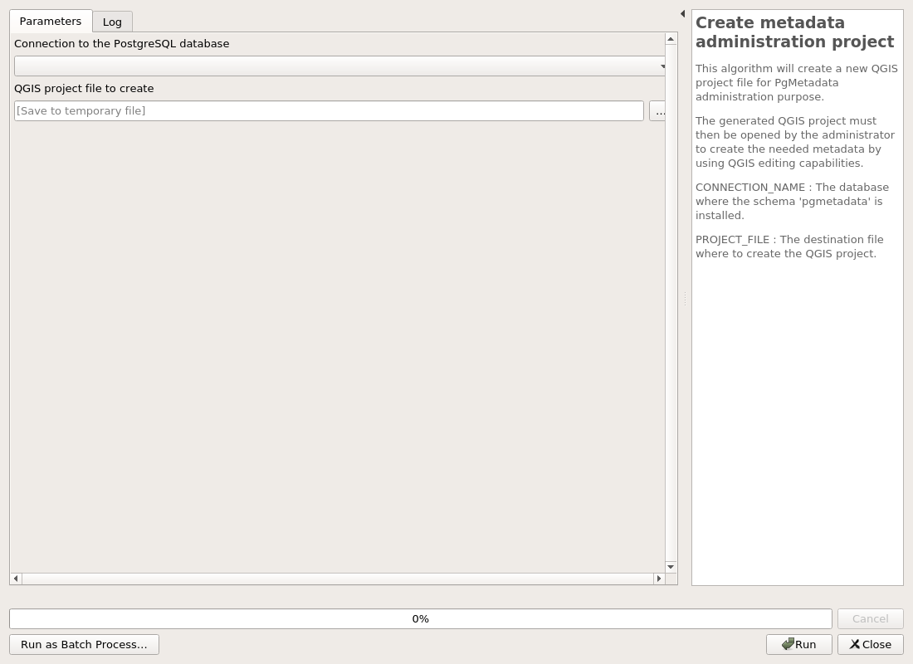

PgMetadata
Administration
Create metadata administration project
This algorithm will create a new QGIS project file for PgMetadata administration purpose.
The generated QGIS project must then be opened by the administrator to create the needed metadata by using QGIS editing capabilities.
CONNECTION_NAME : The database where the schema 'pgmetadata' is installed.
PROJECT_FILE : The destination file where to create the QGIS project.

Parameters
| ID | Description | Type | Info | Required | Advanced | Option |
|---|---|---|---|---|---|---|
| CONNECTION_NAME | Connection to the PostgreSQL database | String | The database where the schema 'pgmetadata' is installed. | ✓ | ||
| PROJECT_FILE | QGIS project file to create | FileDestination | The destination file where to create the QGIS project. | ✓ |
Outputs
| ID | Description | Type | Info |
|---|---|---|---|
| PROJECT_FILE | QGIS project file to create | File |
Database
Installation of the database structure
When you are running the plugin for the first time on a new database, you need to install the database schema.
It will erase and/or create the schema 'pgmetadata'.
CONNECTION_NAME : The database where the schema 'pgmetadata' will be installed.
OVERRIDE : Be careful This will remove data in the schema !

Parameters
| ID | Description | Type | Info | Required | Advanced | Option |
|---|---|---|---|---|---|---|
| CONNECTION_NAME | Connection to the PostgreSQL database | String | The database where the schema 'pgmetadata' will be installed. | ✓ | ||
| OVERRIDE | Erase the schema pgmetadata ? | Boolean | Be careful This will remove data in the schema ! | ✓ |
Outputs
| ID | Description | Type | Info |
|---|---|---|---|
| DATABASE_VERSION | Database version | String |
Upgrade the database structure
When the plugin is upgraded, a database upgrade may be available as well. The database migration must be applied as well on the existing database.
CONNECTION_NAME : The database where the schema 'pgmetadata' is installed.
RUN_MIGRATIONS : For security reason, we ask that you explicitly use this checkbox.

Parameters
| ID | Description | Type | Info | Required | Advanced | Option |
|---|---|---|---|---|---|---|
| CONNECTION_NAME | Connection to the PostgreSQL database | String | The database where the schema 'pgmetadata' is installed. | ✓ | ||
| RUN_MIGRATIONS | Use this checkbox to upgrade. | Boolean | For security reason, we ask that you explicitly use this checkbox. | ✓ |
Outputs
| ID | Description | Type | Info |
|---|---|---|---|
| DATABASE_VERSION | Database version | String |